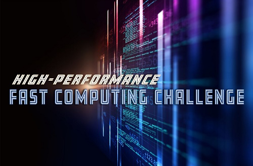

NOV 24, 2020
Palm Beach Atlantic Green Complex
4PM
This even is called Call of Code. At this event people are invited and welcomed to join in learning coding from specialists who work specifically in these areas. We have languages from assembly language to the well know python.

DEC 13, 2020
Palm Beach Atlantic Computer Lab
10AM
This event is for experienced coders. This is a challenge for people who are familiar with coding and wanting to show off their efficient and ability to adapt and code. At this event we will be testing your ability to take a problem and solve it efficiently and in a timely manner through your code. This speedcode event will have a $1500 payout for the winner.
Jan 16, 2021
Palm Beach Atlantic Computer Lab
11AM
This event is for experienced coders. This is a challenge for people who are familiar with coding and wanting to show off their ability to compute at a high level and show off coding for control over AI. In this competition you will code a Arm to pour water into a cup. The winner of this event will be able to spend a day with NASA technology center and see what its like as a NASA developer.